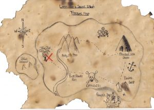

This week — once again, for fun — let’s try a different kind of survey. This time, it’s about location. I’m looking for geographic patterns.Here’s what to do:
- Remember when you first realized that one of your memories didn’t match the current reality. It could be this year, last year, or even a decade ago. (This may not be where you are now. It’s where you were when you realized you weren’t “just confused” and your memory really was different.)
- Got one? Good. Now find its GPS coordinates. Enter the location in the Google Maps GPS Coordinates page.
- So far, so good! Finally, copy the latitude & longitude from that screen, and paste it into this thread as a comment. That’s it… all you need to do.
- If you’ve had multiple “ah-ha!” moments like this, it’s okay to enter all of them. The more coordinates we can work with, the better.
Here’s my example: When I first realized that my odd memory of Mandela’s death in prison wasn’t unique, I was in Atlanta, GA (USA). That conversation was in the “green room” of Dragon Con, at the Hyatt in downtown Atlanta, GA, USA.
According to Google, that’s Latitude: 33.761621 | Longitude: -84.386249 <– If I were leaving a comment, that’s the only information I’d leave.
Once we’ve collected a few dozen locations, I’ll start plotting them on a map, looking for patterns. (Specifically, I’m likely to start with ley lines, in “connect the dots” style.)
SURVEY IS NOW CLOSED. We have 61 locations to work with. A map is being constructed, right now.
Latitude: 43.761538 | Longitude: -79.411079
Latitude: 43.897093 | Longitude: -78.865791
Latitude: 53.544389 | Longitude: -113.490927
Latitude: 50.85034 | Longitude: 4.35171
Latitude: 42.314937 | Longitude: -83.036363
(Hope this helps, Fiona. Thanks for providing the space for discussion)
Latitude: 33.196912 | Longitude: -97.12553
Latitude: 45.648377 | Longitude: 0.156237
Latitude: 42.0231858 | Longitude: -92.90952859999999
Mike H.
Latitude: 49.8997541 | Longitude: -97.1374937
Latitude: 36.091049 | Longitude: -86.787488
Latitude: 37.057075 | Longitude: -122.007816
Latitude: 37.107196 | Longitude: -122.057016
Latitude: 36.948839 | Longitude: -121.853376
1982-1997:
Latitude: 35.1982836 Longitude: – 111.65130199999999
47.49169449999999 11.095498399999997
45.68948229999999 13.783307199999967
13.444304 144.79373099999998
47.998276100000001 – 122.43950259999997
33.5539143 -117.2139143
Latitude: 40.012764 | Longitude: -74.115096
Current location for past 12 years. Began noticing a pattern of ME and related phenomenon around the event of Hurricane (or Frankenstorm ) Sandy, October 2012… which definitely became blatant and has since been constant with periodic surges in momentum since.
I feel it May be significant to analysis to note:
Around the time of the Storm I had been about 3 years commercial media free if at all within my ability to control… (I live with my father and if we are in each others company it is unavoidable the rocker in the living room and re runs of NCIS are 2 of his top fave indulgences!) It was around this time too that I began to experience a complete sharpening and heightened sensitivity of all of my senses including non local ones ie. the intuitive senses and or “clair-” senses as well as a temporary :”blurring of the boundaries demarcaintg the stimulatory origins of the Sensory perceptions, ie. Internal (mine) or external ( other people) especially because my vocation and full time employment was body/energy work/ massage therapy. At the time I figured it all the anomalous and “not myself” experiences were due to a clearing of the clutter – the final result after the purge cycle of being media free and it was like having newly exposes nerve ending I would have to acclimate to having more clear, unfiltered and direct reception of. That may have been an initial contributing factor, but over time I have had cause to hypothesize, look for and consider other causes – thus my presence here.
Prior to the time/events described above, my sensory perception was already more acute than that of most people I know, but I did not know that my levels of acuity were higher than the average until the experiences accumulation and emerging pattern of Wierdness fom those experiences led retrospective analysis of my histoical collection of wired, inexplicable dangling open-ended enigma & Ito begin asking questions and doing research for answers/explanations.
Generale coordiantes of formative (birth-early adulthood) experiences is only off in .000 place of number and only about 1 hour away from current .
1991:
Latitude: 26.2124013 Longitude: 127.68093169999997
22.396428 114.10949700000003
1998-2015:
Latitude: 32.6858853 Longitude: – 117.18308910000002
30.6082428 – 98.39586050000003
37.08350739999999 – 76.3592241
25.03428 – 77.39627999999999
18.4663338 – 66.1057217
Latitude: 49.8997541 Longitude: -97.1374937
Latitude:46.195339
Longitude:18.25783100000001
Latitude: 42.698702 | Longitude: -71.135058
36.18N 94.14W
30.25N 97.75W
Latitude 34.5400242; Longitude -112.4685025
Buckeye, AZ (metro Phoenix,) 33.3706° N, 112.5908° W. Hmm, that makes 3 of us so far at latitude 33. The old nuclear bomb test site at White Sands, New Mexico was at latitude 33, and also that Pres, Kennedy’s death in Dallas, Texas was right near latitude 33. A popular latitude, it would seem. I was born at latitude 34 in Santa Monica (metro Los Angeles) California. Also, I was at latitude 32 (Midland, Texas) when my kids were young & I was reading them the BerenstEIN Books. Although this is certainly coincidence, it would be interesting to see how your survey turns out.
Latitude: 41.33763822308112
Longitude: -73.93386840820312
Latitude: 39.6554908
Longitude: -104.88268055555555
I have lived in the same house for 41 years, altogether i have spent less than 4 years in all that time away from this house. So for me almost all the changes are static..
Latitude: 33.872857 | Longitude: -117.585318
Lat 27.7518
Lon 82.6267
December 2015
Latitude 41.78864199999999
Longitude -89.69621940000002
Approx 40.1N 88.2W
Latitude: 45.560962 | Longitude: -122.635189
Latitude: 42.98695 | Longitude: -81.2
Latitude: 41.373553 | Longitude: -73.730565
Latitude: 44.70268 | Longitude: -73.460941
40.7127837 — -74.0059413
Latitude 49.884328, Longitude -97.146783
I’m glad you posted this survey!
The day I found out that this all existed I was at The Manitoba Legislative Building. It was only my second time there, but the history of the building is why I’m explaining this all, the building is completely masonic. The building is designed to make you feel weird and when I was there I spent about 15 minutes in this weird almost ritual-looking room called the Pool of the Dark Star.
But anyways the really weird part of this story is I have never ever heard of the Mandela Effect, but I was in the bathroom with my friend (right after I left the black star room) and I started telling him about this really weird event that had happened to me when I was about in the 2nd grade. (I think I brought the story up because the bathroom we were in reminded me so much of the bathroom where the story takes place.)
I was at my elementary school, a place that has over a million stories about it being haunted… and as soon as you enter [part of the building] there is a small wooden door to left and it’s always locked.
One day it was wide open, and nobody I knew had ever seen it opened before. At the door, there was a short old man I’d say about early 70’s, he had white hair and a white beard with a white t-shirt on he had an accent but I have no clue where he was from. I remember that he was really happy and energetic. I was standing with my friend Avery and we weren’t really scared of him or anything because he was very welcoming.
He said to us that he lived in this room and that he’s been there since he was a young boy…
I never saw that old man ever again, nor did I ever see that door open again until one day in grade 6, I was leaving the bathroom and I noticed the custodian was opening the door…
I remember asking the custodian if that room ever used to be bigger or something else, and he looked at me like I was joking…
Last year, that memory randomly came back to me. I knew that I had to have see if I was dreaming or crazy. So, I looked up my old friend on Facebook and messaged him hoping that he had any recollection of what took place.
He remembered everything, except when I started telling that that room didn’t exist. He didn’t get the gist of what I was trying to tell him, so I just dropped the subject. Overall that was my first ever experience with something like that.
Here’s a link to wiki of the Legislative Building https://en.wikipedia.org/wiki/Manitoba_Legislative_Building I recently found out that someone wrote a book about it and the Mason related stuff of the bulding
Note: you can edit this post all that you would like too, I know that I made A LOT of errors, sorry.
I’m sure you noticed but i’d also like to point out that out of the 25 comments posted, 3 the locations are extremely close to mine, like a few hundred meters apart, if that’s any help, maybe a weird coincidence but my city only has about 650,000 people
you don’t have to post this
Colin, I did edit it — a lot — to highlight the key points in the story. Thanks!
Latitude: 43.770888 | Longitude: -79.291162
Latitude: 33.47269 | Longitude: -96.996918
Lat.: 34.269447 | Long.: -118.781482
Latitude: 40.762295
Longitude: -73.774262
Latitude: 41.083695 | Longitude: -73.436365
33.873539 Latitude
-117.79999800000001 Longitude
40.7127837 latitude
-74.00594130000002 longitude
Husker Dave
41° 8′ 12″ N / 95° 53′ 26″ W
Latitude: 46.523154 | Longitude: 6.632089
december 2015
Latitude: 49.204412 | Longitude: -122.679302
Oct 2014-Present Day
36.01119380000001, -114.94099799999998
Latitude: 34.288962
Longitude: -118.42896200000001
October 2, 2015
Latitude -31.406759 Longitude 152.451801
Latitude: 44.928105 | Longitude: -74.891865
45.520, -122.674 – Year Experienced: 1999
41.704, -122.644 – Years Experienced: 2010 to date
35.2000° N, 83.8264° W The town of Andrews North Carolina, an event that took place in summer 1996.
It all started there, for me. All the altered memories, all of it I can trace back to that one place for me at least.
There is something very, very wrong with that town.
Brother Gregory, that’s exactly the kind of information I’m looking for. Thank you!